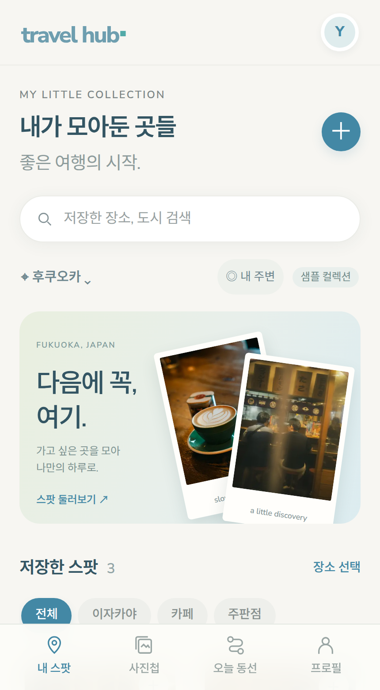
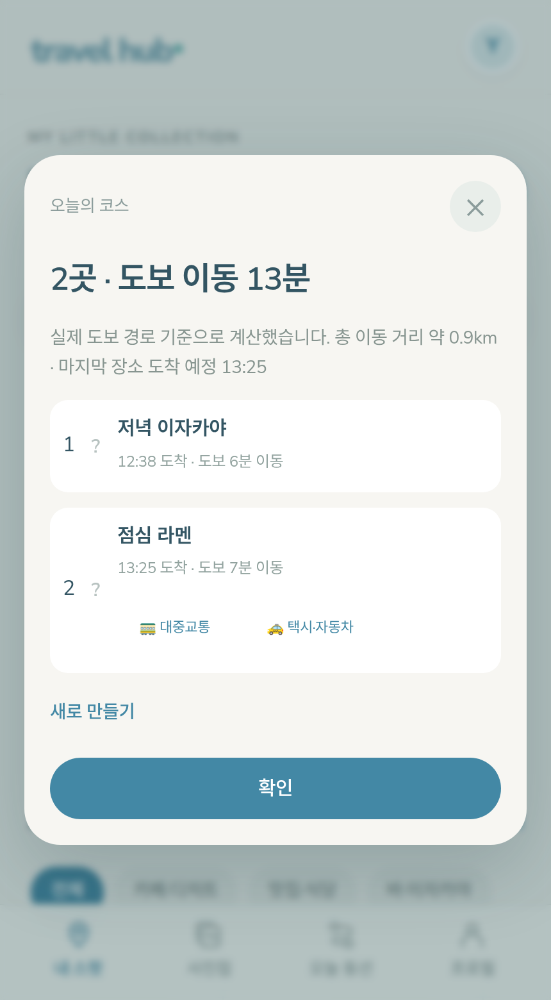

EARLY ACCESS
구글맵 컬렉션을 가져오면 저장한 장소들을 한곳에 모아 보여주고, 그중 고른 곳들로 걸어서 도는 하루 코스를 만들어 봐요.

가져온 장소를 도시별로 모아 카드로 보여주는 실제 화면입니다.

고른 장소들을 걷는 순서로 배치한 코스 화면입니다. 위 장면은 실제 걷기 경로 계산 기능을 예시 데이터로 보여준 것으로, 이 코스 결과는 모든 인터넷 환경에서 검증되지는 않았습니다 — 경로 계산이 어려운 경우 도보 시간 없이 방문 순서만으로도 코스가 만들어집니다.
"개발 중" 표시는 코드는 준비돼 있지만 실제 결제·이메일 발송 계정이 아직 연결되지 않아 정식 서비스로는 열리지 않았다는 뜻입니다. 화면에 나온 숫자·후기는 전부 저희가 실제로 확인한 것만 싣습니다 — 사용자 수나 후기는 아직 없어서 표시하지 않았습니다.
이메일만 남겨주시면 실제로 열릴 때 가장 먼저 알려드려요. 초기 체험 인원으로 참여하고 싶다는 말씀도 이 이메일로 받습니다.
이미 써보고 싶다면 샘플 화면 먼저 둘러보기 ↗